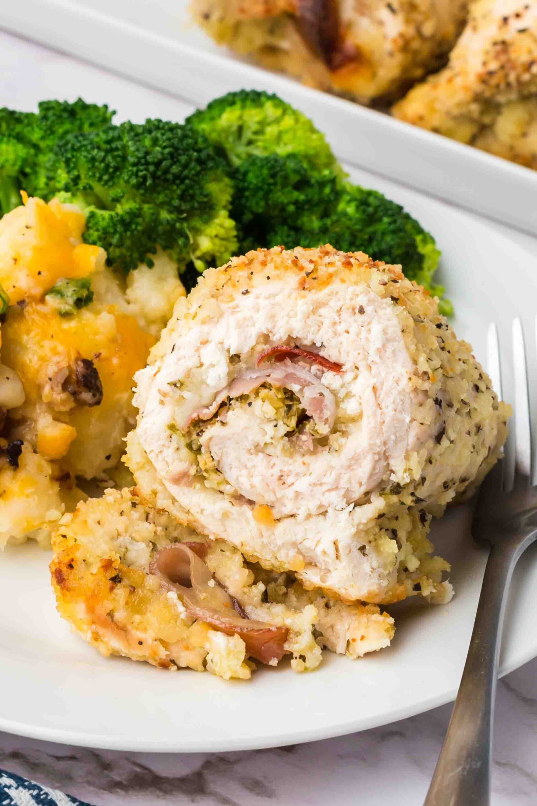

CHICKEN ROLLATINI
Home

Chicken Rollatini is an Italian-American dish made by rolling thin slices
of chicken around a filling, then baking them with sauce.
“Rollatini” is an Italian-American culinary term for thinly sliced meat or
vegetables that are rolled around a filling. In Italy, similar preparations
are more commonly associated with terms like involtini.
INGREDIENTS
- 1 lb chicken breast, sliced thin
- 1 cup ricotta cheese
- 1/2 cup grated Parmesan cheese
- 1 egg
- 2 cloves garlic, minced
- 1/4 cup fresh basil, chopped
- Salt and pepper to taste
- 2 cups marinara sauce
- 1/2 cup mozzarella cheese, shredded
INSTRUCTIONS STEP BY STEP
- Preheat the oven to 375°F (190°C).
- In a bowl, mix the ricotta, Parmesan, egg, garlic, basil, salt, and pepper.
- Spread the mixture on each slice of chicken and roll up tightly.
- Place the rolled chicken in a baking dish and pour the marinara sauce over them.
- Bake for 25-30 minutes or until the chicken is cooked through and the cheese is bubbly.
Back to Recipes